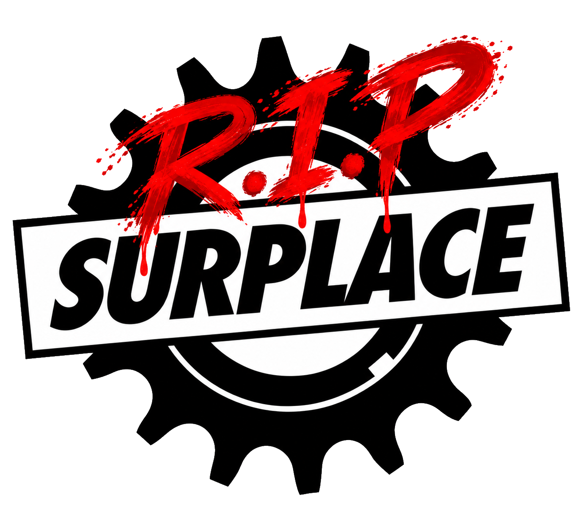
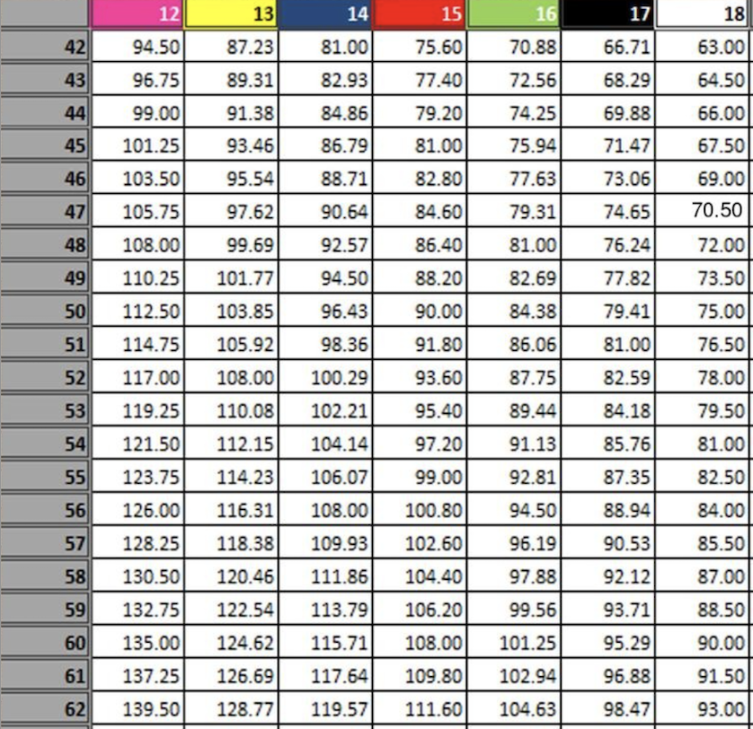

Skip to content
About
Homemade
Projects

Fixie Calculator
Gear ratio
2.82
Gear inches
76.24
Skid patches
17
Chainring teeth
42
43
44
45
46
47
48
49
50
51
52
53
54
55
56
57
58
59
60
61
62
Rear cog teeth
12
13
14
15
16
17
18
Gear inches reference chart
